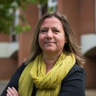
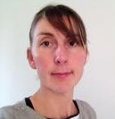
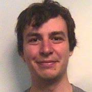

The Synaesthesia Toolkit has been developed as part of the MULTISENSE research project at the University of Sussex, funded by the European Research Council.
The research team

Prof J Simner R Smees Dr J Alvarez
Professor Julia Simner, Director of misophonia child research. Julia Simner is a professor of neuropsychology specialising in multisensory research. She runs the MULTISENSE lab at the University of Sussex where her research focusses on sensory differences. She has been widely published in well regarded science journals (e.g., Nature), and in over 100 newspaper and media articles worldwide. She is the Science Officer for the UK Synaesthesia Association, and the author of several books (Oxford Handbook of Synesthesia; and Synaesthesia: A Very Short Introduction).
Rebecca Smees, Research fellow. Rebecca Smees has a BSc in Psychology from University of Sheffield, an MSc in Social research methods from the City University and is currently studying for her PhD in Psychology at the University of Sussex investigating creativity in neurodivergent populations, alongside here research fellow role. She has had multiple research roles on Longitudinal projects investigating the impact of family background and early experiences on child outcomes at the Institute of Education, London and the University of Oxford. Her current research fellow role on the syntoolkit, focuses on developing and validating a child-friendly synaesthesia test app.
Dr James Alvarez, Programmer. James Alvarez has a BSc in Psychology from University of Nottingham, an MSc in Psychological research methods from the University of Exeter and a Phd investigating colour and language from the University of Surrey. He is currently working as a software engineer at the University of Sussex, and builds software solutions for academic research across multiple disciplines.
MULTISENSE: previous members of the team
Dr Louisa Rinaldi, PhD candidate/Postdoctoral researcher 2016-2020 Louisa Rinaldi has a PhD in Neuropsychology from the University of Sussex, as well as a BSc in Psychology and an MSc in Clinical Cognitive Neuroscience from Sheffield Hallam University. Her PhD focused on sensory differences in children, looking particularly at synaesthesia, and she now focuses on misophonia. Her research has shown how sensory differences can impact the cognition, personality, health and well-being of children and adults.
Dr Duncan Carmichael, Postdoctoral researcher 2015-2019 Duncan Carmichael has a degree in Psychology from the University of Stirling, an MSc in functional neuroimaging from Brunel University and a PhD in Neuroinformatics from the University of Edinburgh. His research on the MULTISENSE project focused on the causes of synaesthesia, how synaesthesia is related to health, and how synaesthesia develops in children. Duncan is currently a lecturer in Psychology at Edinburgh Napier University.
Dr Abby Ipser, Postdoctoral researcher 2016-2019 Abby Ipser has degrees in in Psychology from Brunel University (BSc) and City University London (PhD). Her research interests include the timing of multisensory integration, and the perception of action, faces, and facial expressions. Her work on the MULTISENSE project focused on how synaesthesia develops in older people. Abby currently works as a research analyst at the Office for National Statistics.
Dr Jame Hughes, Postdoctoral researcher 2019-2020 has a PhD in Psychology from the University of Sussex, that focused on primarily on synaesthesia and savant syndrome. His work on the MULTISENSE project focused on developing the Syntoolkit test app for children as well as how synaesthesia develops in children how synaesthesia. James currently works as a research applications web developer at UCL.